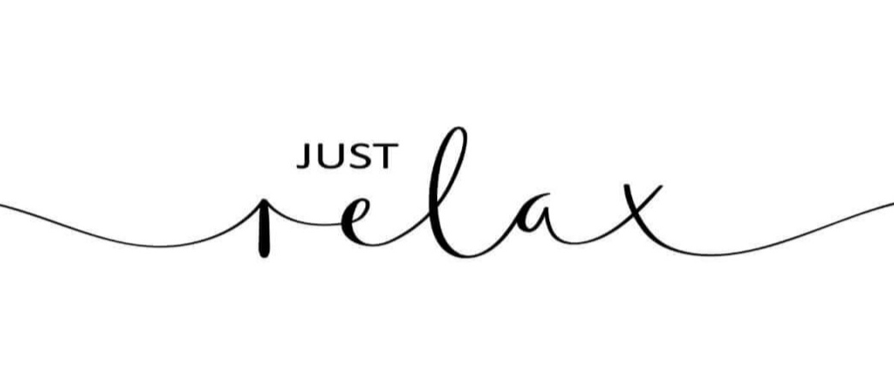

.jpg)

L'étymologie de la sophrologie provient du grec : SOS = Harmonie ; PHROS = Conscience et LOGOS = Parole.
La sophrologie a pour objectif, par différentes techniques d'apprendre à se détendre, à écouter son corps et à développer ses capacités pour être mieux avec soi même et les autres.
Certains exercices vus lors des séances sont utilisables quotidiennement.
Ceux ci permettent de gérer le stress, lacher prise sur les choses négatives pour pouvoir retrouver de la sérénité et de la positivité dans sa vie.
La relaxation peut se faire de manière allongée, assise ou debout, tout dépend de vos capacités physiques et de vos envies !
L'hypnose est ce qu'on appelle "un état de conscience modifié". On le pratique tous les jours, par exemple lorsque l'on est "dans la Lune" ou bien lorsqu'on regarde un film à la télévision et qu'on est plongé dans l'histoire au point de ne plus rien entendre de nous, cela fonctionne avec un livre également. Cet état de conscience permet de guérir différentes problématiques comme la dépression, la gestion de la perte d'un proche ou d'un animal et le manque de confiance en soi par exemple. On peut également travailler sur les blessures liées à l'enfance et les croyances limitantes qui empechent d'avancer. Les troubles de l'alimentation et les addictions comme le tabac ou l'alcool peuvent être réguler voire même provoquer l'arrêt complet de ces difficultés. L'approche holistique est une approche qui considère la personne dans son ensemble. Elle s'adapte aux dimensions physiques,mentales,émotionnelles et spirituelles de chacun.
La guidance sur Oracle est une pratique qui utilise des cartes conçues pour guider l'individu vers une meilleure compréhension de soi et de son chemin de vie. Chaque carte représente un aspect de la vie ou un conseil spirituel. Lorsqu'une carte est tirée dans le cadre d'une guidance, elle peut offrir des messages inspirants et des réponses aux questions personnelles. Chacun reste libre de ses propres choix quelque soit le message apporté par les cartes.